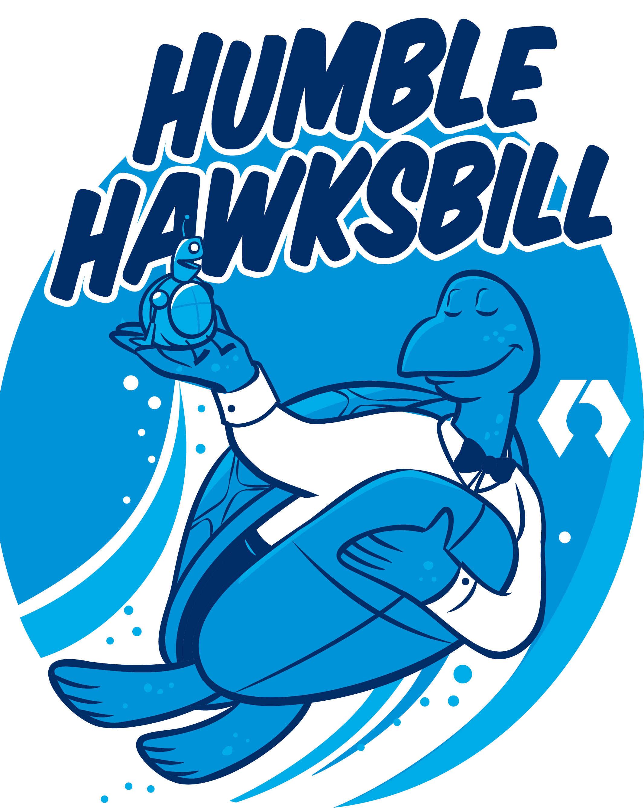

Simulate. Innovate. Elevate. — ROS 2, Gazebo, RViz2 Primer
🚦 Big Picture
What: ROS 2 is a middleware + tools set for building robot software. Gazebo simulates physics and sensors. RViz2 visualizes your robot and data.
Why: Decouple code into modular nodes, test safely in sim, and iterate faster before real hardware.
How: Write nodes (Python/C++), connect them via topics/services/actions, visualize in RViz2, and validate behavior in Gazebo.
NodesTopicsPub/SubServicesActionsParametersTF2
🧭 Core Concepts
- Node: A process that does one job (e.g., camera, planner).
- Topic: Named bus for streaming messages (sensor data, commands).
- Publisher/Subscriber: Write/read messages on topics, decoupled in time/space.
- Callback: Function executed on events (message received, timer tick).
- rclpy: ROS 2 Python client library to write nodes quickly.
- Service: Request/response (e.g., reset odometry).
- Action: Long-running goal-based tasks (e.g., navigate to pose).
- Parameters: Runtime-configurable values for nodes.
- TF2: Coordinate frames & transforms (map ↔ base_link ↔ sensors).
🧪 Tools
- Gazebo (sim): 3D physics, sensors, plugins. Test without breaking robots.
- RViz2 (viz): Visualize TF, LaserScan, PointCloud, paths, markers.
- ros2 CLI: Inspect graph (
ros2 node|topic|service|param|action). - Launch system: Start many nodes with one Python launch file.
- Package/Workspace: Reusable modules in a
colconworkspace.
📦 Minimal Workspace Setup (Theory + Commands)
What A workspace (ros2_ws) holds your packages.
Why Keeps projects modular and buildable with colcon.
How Create, build, source, run.
# 1) create workspace
mkdir -p ~/ros2_ws/src && cd ~/ros2_ws
# 2) create a Python package
ros2 pkg create --build-type ament_python demo_nodes --dependencies rclpy std_msgs
# 3) build and source
colcon build
source install/setup.bash
🗺️ TF2 (Frames & Transforms)
What: A tree of coordinate frames updated over time (e.g., map → odom → base_link → camera_link).
Why: Lets sensors and planners agree on where things are.
How: Publish transforms (robot_state_publisher, static_transform_publisher) and view in RViz2.
# Static transform example:
ros2 run tf2_ros static_transform_publisher 0 0 0 0 0 0 map odom
🪁 RViz2 — Visualize
What
RViz2 displays robot model, TF tree, sensor streams, markers, trajectories.
Why
Debug quickly: see what the robot “sees” and how frames move.
How
- Start:
rviz2(or via launch) - Set Fixed Frame (e.g.,
maporbase_link). - Add displays: TF, LaserScan, Odometry, Path, RobotModel.
Quick Start
# Save a config once you arrange panels:
rviz2 --display-config my_view.rviz
# Launch with a config in a package launch file (example below).

🏗️ Gazebo — Simulate
What
Physics engine + sensor simulation (camera, lidar, IMU) + plugins.
Why
Develop safely and reproducibly without hardware; CI-friendly experiments.
How
- Spawn URDF/SDF robots.
- Bridge topics to ROS 2 (if needed).
- Use world files to place obstacles and lights.
Example (Launch Sketch)
# Typically provided by a sim package; structure looks like:
ros2 launch gazebo_ros gazebo.launch.py
# or a custom launch that:
# - starts Gazebo
# - spawns your robot
# - brings up controllers and bridges